Первые конкурсы составления задач. Йоркширская группа:
Гримшоу, Тертон, Кидсон, "Д. Б. из Брайдпорта"—Джон Браун. Хили. Кэммбелл.
Сборник "Английская шахматная задача"
Второй этап развития современной задачи обычно характеризуется термином "переходная школа". Венинк ограничивает этот период годами 1845—1862. Начало его он определяет датой появления "индийской задачи" и выхода коллекции А. Александра, конец — датой выхода первого капитального труда по теории композиции М. Ланге и проведения Бристольского конкурса. Значение этого конкурса как важной вехи в истории современной задачи подчеркивает и Уайт: "С окончанием Бристольского конкурса в 1862 году все крупные темы, которые едва намечались в коллекции А. Александра (1846), созрели для их законченного выражения". Правда, тут же он добавляет, что, как и во времена "Бонус социуса", "сознание человека оказалось подобным дырявому мешку. Не было даже попыток изучить задачи пионеров, чтобы направить дальнейшую работу по новому руслу". Все открытые в этот период идеи получили широкое развитие лишь в начале XX века.
Выделение промежуточного периода между "старой школой" и этапом, когда уже сложились различные национальные школы, несомненно оправдано. Однако рамки его, на наш взгляд, должны быть расширены. Все те идеи, по времени открытия которых определяют дату завершения переходного периода, к формированию основных школ XIX века непосредственного отношения не имели. Творчество композиторов, открывших эти идеи, отнюдь не закончилось в 1862 г., а продолжалось позднее. Вместе с тем оно целиком относится к переходному периоду, ибо формирование национальных школ явилось делом следующего поколения композиторов. Вот почему, думается, правильнее отнести окончание переходного периода к 70-м годам, считая, что он охватывает примерно всю третью четверть столетия.
*
*
*
Англия в середине прошлого века занимала ведущее место в развитии шахмат. Во главе шахматного движения стоял Стаунтон. Он основал в Англии шахматную печать. Он явился инициатором проведения первого международного турнира, приуроченного к Лондонской всемирной выставке 1851 года. Стаунтону же принадлежала идея организации конкурса составления шахматных задач. Задуманный в связи с Лондонским турниром, он был объявлен только в 1852 г. По условиям каждый участник мог присылать до 8 задач, за право участия и каждую задачу полагался денежный взнос. Конкурс был объявлен как международный, но в нем приняли участие лишь английские композиторы. Присуждение затянулось, и только в конце 1854 г. были объявлены результаты: призы получили С. Энгес и В. Гримшоу.
Одна из призовых задач Энгеса приводится на диаграмме №55
№55
С. Энгес Английский конкурс 1852 II приз
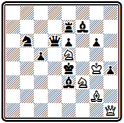
Мат в 4 хода
Хотя решение и форсированное, но комбинация свежа и оригинальна. 1. К:h4+ Kp:е5 2. Kf3+ Kpe4. Как будто ничего не изменилось по сравнению с начальным положением, только белые потеряли коня е5. Однако вскрытие вертикали "h" позволяет белым завершить комбинацию повторной жертвой коня на е5: 3. Ке5+ Кр:е5 4. Фh8# или 3... Kpd4 4. Фа1# . Оба мата — правильные.
Задачи другого призера—Гримшоу более современны и сложны. Композиция №56
№56
В. Гримшоу Английский конкурс 1852 I приз
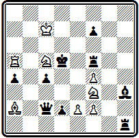
Мат в 4 хода
открывается ходом короля 1. Kpd7, смело идущего под шахи. Атакуя поле е6, король освобождает коневую батарею для создания угрозы. Если черные объявят шах, снимая защиту с поля е5, например, путем 1... Л:f4(f6)+ или 1... Ле5+, то последует просто 2. Ке6+ Кре4 3. Ле5#. Однако на шах 1... Лh(g)5+ этот ответ не проходит. Решает неожиданное 2. f5. Черные могут снова объявлять шахи, беря пешку слоном или ферзем, но теперь игра батареи достигает цели: 2... С:f5+ 3. Ке6+ Кре4 4. Ле5#, 2... Ф:f5+ 3. Ке6+ Кре4 4. K:d2#.
Пример № 57 отличается тонкими тихими ходами.
№57
В. Гримшоу Английский конкурс 1852 I приз
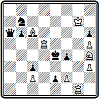
Мат в 3 хода
Эффектное вступление 1. Лf1, уводящее ладью в засаду, да еще под удар превращающейся черной пешки, создает угрозу 2. f3+. На 1... еfФ следует новая жертва 2. Kf3, принятие которой приводит к красивому правильному мату 2... Кр:f3 3. Лd2# , использующему вскрытие второй горизонтали после ухода пешки е2. При защите 1... f3 белая ладья возвращается обратно: 2. Лg1 и неизбежно 3. Лg4# . Есть и интересный ложный след с чистым матом 1. Лd3+ Kpe5 2. Kg6+, и если 2... Кре6, то 3. Cd7#; замысел белых разрушает 2... Kpf5.
Успех Гримшоу подтвердил уже завоеванную им репутацию крупного мастера английской композиции. Он возглавлял группу молодых композиторов из Йоркшира, явившихся родоначальниками современного английского задачного искусства.
Гримшоу выдвинулся в отделе Стаунтона "Иллюстрейтид Лондон ньюс", где он начал печататься с 1849 г.
В 1850 г. Гримшоу выступает с задачей № 58, в которой впервые была представлена тема, впоследствии получившая его имя.
№58
В. Гримшоу "Иллюстрейтид лондон ньюс" 1850
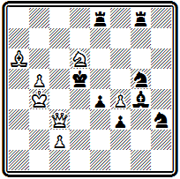
Мат в 5 ходов
Ход 1. Сс8 создает угрозу мата ферзем и вынуждает черного слона сделать критический ход 1... С:с8.
Белые снова отнимают поле е6, играя 2. Фа6 и грозя 3. с4# . Если теперь 2... Се6, то перекрывается ладья е8 и проходит 3. Фе5#; в случае же 2... Ле6 белые используют перекрытие слона, предварительно пожертвовав ферзя: 3. Фd4+ Кр:d4 4. Kf5+ Kpd5 5. c4#.
Взаимное перекрытие черных слона и ладьи на одном поле и составляет содержание темы Гримшоу.
Композиция № 59 содержит идею прокладки пути.
№59
В. Гримшоу "Иллюстрейтид лондон ньюс" 1853
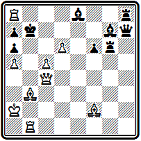
Мат в 2 хода
Белый ферзь движется до края доски с целью освободить путь для последующего движения слона: 1. Фg8 Kp:а8 2. Cd5#.
Довольно редкий для того времени пример двухходовки.
Задача № 60 интересна вступлением
№60
В. Гримшоу "Иллюстрейтид лондон ньюс" 1853
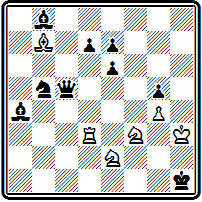
Мат в 4 хода
1. Лd6, ставящим ладью под многочисленные удары с единственной целью — блокировать пешку d7.
Когда черные, защищаясь от угрозы 2. Kg3#, возьмут ладью слоном или ферзем, белые смогут сыграть 2. Kd2+ и затем 3. Ке4, ибо нет защищающего хода 2... d5.
Первый действительно международный конкурс состоялся в 1856 г. Он был организован лондонским еженедельником "Эра". На конкурс поступило 16 посылок от английских и зарубежных композиторов. Результаты его были объявлены через год и изданы отдельной брошюрой (16). Гримшоу и Энгес на этот раз входили в судейскую коллегию.
Гримшоу активно работал до конца 70-х годов, однако в конкурсах участвовал редко и успеха в них не имел.
Из его работ, относящихся к последнему периоду, интересна следующая задача -
В. Гримшоу "Иллюстрейтид лондон ньюс", 1873
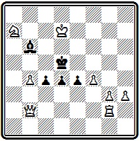
мат в 3 хода.
Тонкое вступление 1. Лh2 создает угрозу 2. Кb5, но в главном варианте 1... С:а7 после 2. Фа1 возникает позиция цугцванга.
К сожалению, проходит и 1. Лd2. Исправить задачу можно добавлением белой пешки b5. Теперь после - 1. Лh2 - цугцванг
Среди сподвижников Гримшоу по йоркширской группе выделялись Кидсон и Тертон. Их творчество родственно по духу творчеству Гримшоу и характеризуется повышенным вниманием к идейному содержанию задачи.
Кидсону, например, принадлежит приоритет в представлении идеи, обратившей на себя внимание много позже, в начале XX века, и получившей название римской. В задаче № 61
№61
Г. Кидсон "Касселс фэмили пейпер" 1858
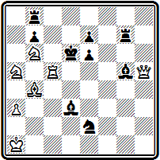
Мат в 3 хода
нельзя сразу играть 1. Фh8, нападая на ладью b8, так как нет ответа на 1... Cf6+. Нужно предварительно сыграть 1. Фh2+, вынуждая перевод черного слона на смежную линию 1... Cf4, после чего уже проходит 2. Фh8. Теперь при объявлении шаха 2... Се5+ черный слон блокирует поле у собственного короля и следует мат 3. Лс3# . Подобное предварительное отвлечение черной фигуры для того, чтобы при защите от готовой в начальном положении угрозы белых создавалось какое-то ослабление, и составляет суть римской идеи.
Два следующих произведения Кидсона используют цугцванг — излюбленный мотив многих английских композиторов, начиная с Гримшоу.
В примере № 62 -
№62
Г. Кидсон "Иллюстрейтид лондон ньюс" 1869
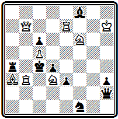
Мат в 3 хода
ходом 1. Лg7 ладья освобождает путь ферзю и создает угрозу мата с поля f7. Черные защищаются 1... Се7, но тогда, играя 2. Лg6, белые создают положение цугцванга: на любой ответ следует мат.
Играть ладьей нужно именно на g6, чтобы предупредить связывание белого коня при 2... Фс2.
В четырехходовке №63 позиция цугцванга возникает последовательно на втором и третьем ходах.
№63
Г. Кидсон "Вестминстер клаб пейпер" 1868
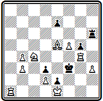
Мат в 4 хода
Защищаясь после 1. Сс7 от угрозы 2. Ке5#, черные вынуждены играть 1... Ле6. Белые продолжают 2. Ла8 — без угрозы, но у черных оказывается единственный ход, не приводящий к немедленному мату: 2... Ле3. Тогда 3. Лf8, и защитительные ресурсы черных исчерпаны.
Любопытна композиция № 64 Тертона -
№64
Г. Тертон "Нью чесс плейер" 1853
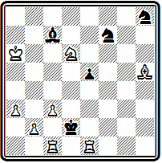
Мат в 3 хода
Здесь в тихих вариантах при эффектном вступительном ходе осуществляются два симметричных варианта с правильными матами.
После 1. Cd1, разъединяющего обе ладьи и приносящего их в жертву, грозит 2. Сb3 С:d6 3. Лcd1#.
Идейные варианты возникают при взятии ладей 1... Кр:e1 2. Ке4 Kpf1 3. Cf3# и 1... Кр:с1 2. Кс4 Крb1 3. Сb3#.
В позиции № 65 интересна жертва ферзя для отвлечения ладьи в главном варианте:
№65
Г. Тертон "Иллюстрейтид лондон ньюс" 1856
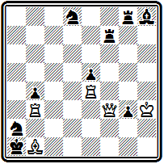
Мат в 4 хода
1. Ле2 (грозит 2. Л:а2#; 1... К~ 2. Фа8+) 1... Ла7 2. Фа8 (сразу 2. С:а2 не решает из-за 2... Лh7+, надо отвлечь ладью с седьмой горизонтали)
2... Л:а8 (2... Лh7+ 3. С:h7 и 4. Ф:а2#) 3. С:а2 Л:а2 (грозило 4. Лb1#) 4. Ле1#.
В дополнительной игре проходит вторая жертва ферзя для устранения черного коня: 1... Лh7+ 2. С:h7 Кс3 3. Ф:с3+ bc 4. Лb1#.
Самая известная задача Тертона приведена на диаграмме №66.
№66
Г. Тертон "Иллюстрейтид лондон ньюс" 1856
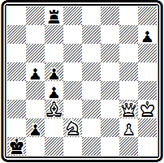
Мат в 3 хода
Она содержит очень интересную идею. Первым ходом 1. Ch8 белый слон освобождает диагональ a1-g7 для последующего маневра ферзем. Заняв ее после 1... b4 2. Фg7, ферзь дает затем мат 3. Ф:b2#, двигаясь по той же диагонали в противоположном направлении и, что существенно, используя поддержку уступившего дорогу слона. Эта идея получила впоследствии название темы Тертона.
Совершенно в ином направлении развивалось творчество другого известного английского композитора Д. Брауна, выступавшего под псевдонимом "Д. Б. из Брайдпорта". Его не занимали сложные идеи борьбы и взаимодействия фигур, содержание игры в его задачах весьма просто. Зато он очень часто добивался правильного мата. Как правило, Браун строил малофигурные, весьма экономичные позиции. За белых у него выступали обычно ферзь и две легкие фигуры при минимальном количестве пешек; у черных короля обороняли одни пешки, и лишь изредка к ним присоединялись одна-две легкие фигуры.
Типичным примером стиля Брауна служит задача № 67.
№67
Д. Браун "Чесс плейерс кроникл" 1854
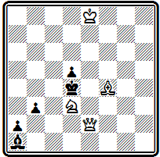
Мат в 3 хода
Главная игра проходит в варианте 1. Кb4 Сс3 2. Ка6 С~ 3. Се5#. После первого хода черные в цугцванге, и на все их ответы находятся пути к мату: 1... b2 2. Фс2; 1... Крс5 2. Cd6+; 1... Крс3(Сb2) 2. Cd6.
Выделяется интересная композиция №68,
№68
Д. Браун "Иллюстрейтид лондон ньюс" 1862
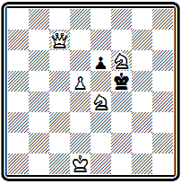
Мат в 3 хода
также с хорошим первым ходом 1. d6, приводящим к цугцвангу.
Здесь очень красивы тонкие тихие ходы ферзя и экономичное построение: 1... е5 2. Фа7! — ферзь должен, оставаясь на седьмой горизонтали для объявления мата с полей d7 и h7, подготовить также мат 2... Kpf4 3. Фf2#; 1... Кре5 2. Фс1! —ферзь матует с с5 и g5; наконец, 1... Kpf4 2. Фс5— ферзь готовит мат с f2, но надо также отрезать обратный путь королю на f5
Незаслуженно осталась незамеченной задача № 69,
№69
Д. Браун "Иллюстрейтид лондон ньюс" 1854(версия)
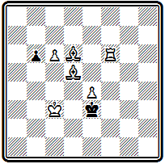
Мат в 4 хода
в которой тихая маневренная игра приводит к двум тождественным играм. После 1. Сb4 выбор у черных невелик— у них всего два ответа.
На 1... Кре2 следует 2. Сс4+ Кре3 (при 2... Kpe1 белые дают чистый мат 3. Лf1#) 3. Cd3 —теперь черные вынуждены двигать пешку 3... b5, на что следует уже экономичный, но не чистый мат 4. Сс5#. Совершенно такой же мат, но при расположении фигур на ряд ниже проходит в варианте 1... b5 2. Крс2 Кре2 3. Cd2 b4 4. Сс4#. Интересен и такой мат - 2... Kpd4 3. Крd2 Кре5 4. Сс3#.
Сборник 174 задач Д. Брауна был издан в 1865 г., вскоре после его смерти (17).
В начале нынешнего века в теоретических работах ряда немецких композиторов с большой настойчивостью проводилась мысль о том, что Браун является прямым предшественником и чуть ли не основоположником чешской школы в композиции. Это утверждение, однако, неосновательно, как мы убедимся, познакомившись в дальнейшем с творчеством чешских проблемистов.
Ранний период творчества следующего видного английского композитора Ф. Хили ознаменовался рядом конкурсных успехов. Он был вторым призером упомянутого международного конкурса "Эра" 1856 г., победителем английских конкурсов, приуроченных к первым национальным шахматным конгрессам в Манчестере (1857) и Бирмингеме (1858), а затем, уступив первенство в конкурсе III конгресса в Кэмбридже (1860) Макартуру, добился лучших результатов в большом международном конкурсе, проведенном в связи с IV конгрессом Британской шахматной ассоциации в Бристоле (1861).
Задача №70 — из посылки, получившей II приз в конкурсе "Эра".
№70
Ф. Хили "Эра" 1856 II приз
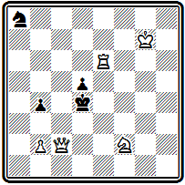
Мат в 3 хода
После вступительных ходов 1. Фc6 Кb6 белые осуществляют тихую жертву ладьи 2. Ле5, повторно ставя черных в положение цугцванга. Принятие жертвы приводит к правильному мату: 2... Кр:е5 3. Фf6#.
Следующий пример №71 интересен введением значительных сил черных,
№71
Ф. Хили Манчестерский конкурс 1857 I приз
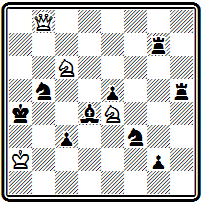
Мат в 3 хода
которые после отвлечения ладьи 1. Фс8 Ла7 2. Фg4 не могут воспрепятствовать угрозе мата 3. Кс5# при связанном слоне: на 2... Кb~ проходит правильный мат со связкой 3. К:с3#.
Изящна задача № 72, в которой игра развертывается на фоне взаимного цугцванга и белым удается достичь цели лишь тонкими маневрами короля.
№72
Ф. Хили "Иллюстрейтид лондон ньюс" 1861
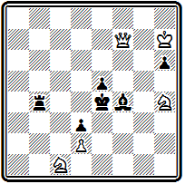
Мат в 5 ходов
После 1. Кb3 белые завершают окружение короля, и у черных остается единственный безопасный ход 1... h5. Ладья прикована к защите полей b7 и с4, а на 1... Лd4 есть мат 2. Кс5# ; слон же прикрывает поле f3 от мата ферзем. Найдись теперь у белых выжидательный ход, они давали бы мат уже на третьем ходу. Но и белые как будто в цугцванге: кони должны караулить черного короля, уход ферзя разрушает подготовленные маты, а ходы короля дают черным возможность объявлять шахи. Но оказывается, что шахи эти не так уж страшны: 2. Kpg7 Ch6+ 3. Kpg6 Лb6+ 4. Кр:h5! Шахов больше нет, а защититься от двух угроз на с4 и f3 черные бессильны. Нельзя было отступать королем на h7 из-за связки ферзя 4... Лb7, так как после ухода слона с f4 мата на b7 нет. Если бы черные не объявляли второй шах, а вернулись слоном обратно 3... Cf4, то после 4. Кр:h5 оказались бы в действительном цугцванге.
Уже рассмотренные примеры показывают, что Хили, работая в стиле Брауна, вносил в него существенные поправки, оживляя игру элементами тактической борьбы и содержательными маневрами. Но у него есть произведения, и их немало, которые составлены совсем в ином плане. Они насыщены интересной, содержательной игрой белых и черных фигур. В этих произведениях он выступает продолжателем другой линии развития английской задачи в переходный период, которую представлял Гримшоу.
На диаграмме №73 приведена знаменитая задача Хили из его посылки, удостоенной I приза на Бристольском конкурсе 1861 г.
№73
Ф. Хили Бристольский конкурс 1861 I приз
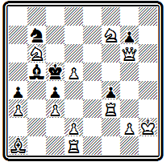
Мат в 3 хода
Композиция исключительно оригинальна по своей идее и до сих пор производит большое впечатление. Подобно "индийской задаче", найти первый ход в ней можно, лишь разгадав план игры в целом. У черных только две свободные фигуры — конь и слон.
На ходы коня мат готов: 2. Фd6# , при движении же слона можно попробовать 2. Фb1 с угрозой мата 3. Фb4#, но после возвращения слона 2... Сb5 мата нет. Однако бросается в глаза, что, не стой на первой линии ладья, возможен был бы мат ферзем с g1. Итак, ключ к решению найден: ладья должна отступить в угол 1. Лh1!, чтобы после 1... С~ 2. Фb1Сb5 ферзю оказалось доступно поле g1 — 3. Фg1#. Такая идея освобождения линии получила название бристольской темы.
Известно, что использованный здесь механизм борьбы ферзя со слоном встречался несколько раньше в двух проблемах Брауна.
Д. Бpaун "Иллюстрейтид лондон нъюс", 1853
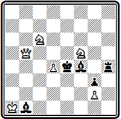
мат в 3 хода
1. Кb4 Сd6 2. Фf1.
Д. Бpaун "Иллюстрейтид лондон нъюс", 1859
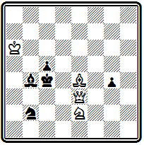
мат в 3 хода.
1. Фg3 Ce1 2. Фb8.
Сам Хили и после бристольской задачи не раз возвращался к этому механизму. Интересна, в частности, его пятиходовка -
Ф. Хили "Вестминстер пейпер". 1873
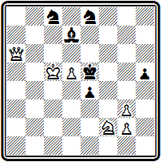
мат в 5 ходов
1. Фh6 Cf5 2. Kg4+ hg 3. Фа6 Cd7 4. Фf1.
Возможно, что эти задачи действительно послужили для Хили толчком к созданию его произведения, но, конечно, основная его идея, составляющая суть бристольской темы — идея освобождения линии ходом одной фигуры для последующего продвижения за ней другой,— оригинальна, найдена Хили самостоятельно, и одного этого открытия было бы достаточно, чтобы прославить имя ее автора.
Сложная фигурная игра развертывается в примере № 74.
№74
Ф. Хили "Иллюстрейтид лондон ньюс" 1858
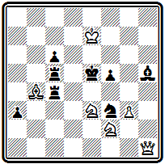
Мат в 4 хода
После 1. Фb1 грозит 2. Ф:f5+ Kpd4 3. Фе4#. Защищаясь ладьей, черные создают идейные варианты: 1... Ле4 2. Фd3 Kd4 3. Фс4 ~ 4. Ф:с5# или 4. Kd3# и 1... Лс2 2. Сс3+ Л5:с3(2... Л2:с3 3. Ф:f5+) 3. Фb4 Лс4 4. Фd6#. Внешне ходы черной ладьи с4 напоминают критические — в обоих вариантах она переходит через поле, на котором затем перекрывается другой фигурой. Однако здесь не выполнено важное условие единственности цели комбинации. В первом варианте ход 3. Фс4 использует не только перекрытие ладьи, но и блокирование поля е4, во втором же перекрытие вообще не играет роли, так как ход 3. Фb4 достигает цели только из-за открытия линий, позволившего создать сразу две угрозы — 4. Фd6# и 4. Фf4#. Интересно сравнить эту задачу с лойдовской позицией № 000, являющейся первым примером тематически чистого представления двух критических ходов черной ладьи.
В задаче №75 представлена интересная тема запирания, носящая образное название "мышеловки".
№75
Ф. Хили "Иллюстрейтид лондон ньюс" 1871
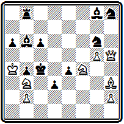
Мат в 4 хода
Первым ходом белые нападают на слона 1. Фh7 и загоняют его в клетку 1... Cd5. Пожертвовав затем ферзя 2. Фа7 С:а7 (для отвлечения слона b6), белые захлопывают "мышеловку" 3. Ке6. Грозят маты конем b3, а если слон попытается вырваться из неволи 3... С:е6, то его уничтожает белый слон 4. С:е6#.
После Бристольского конкурса Хили в соревнованиях почти не выступал. Последний успех ему принесла двухходовка –
Ф. Хили "Чесс мансли", 1886, I приз
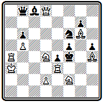
Мат в 2 хода
Задача решается неожиданным ходом 1. Ла6— единственным, сохраняющим цугцванг черных.
Ф. Хили издал сборник 200 своих задач в 1866 г. (18). Переработанное издание книги было выпушено его сыном П. Хили, тоже шахматным композитором, в 1908 г. (19).
Грандиозностью замыслов, сложностью построения, трудностью решения задач превзошел всех своих соотечественников Д. Кэмпбелл. Активное творчество его продолжалось меньше десяти лет, но оно оставило глубокий след не только в английской, но и в мировой композиции.
В 1854 г., сразу после появления задачи Новотного (№91), Кэмпбелл опубликовал несколько задач, где разрабатывал его тему. К ней он неоднократно возвращался и в дальнейшем.
Одна из ранних композиций Кэмпбелла приведена на диаграмме № 76.
№76
Д. Кэмпбелл "Иллюстрейтид лондон ньюс" 1854
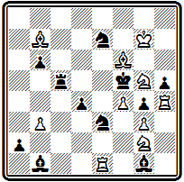
Мат в 5 ходов
Решение открывается трудным ходом 1. Лh2, освобождающим поле h4 для коня и подготавливающим жертву ладьи на с2. В главном варианте 1... Kg6 2. Лс1 (грозит 3. Л : с5+) 2... Л:c1 3. Kh4+ (можно и 3. К:е3+) 3... К:h4 4. Лс2 Л(С):с2 5. Се4(Сс8)#: осуществляется тема Новотного с критическим ходом одной из перекрывающих фигур. На 1... К:g2 решает 2. Л : е7 К : f4 3. Сс8+
Уже здесь четко выступают основные черты стиля Кэмпбелла — сложные позиции и скрытый глубокий замысел.
В примере № 77 два главных варианта содержат последовательные жертвы белых фигур по линии действия черных слона и ладьи.
№77
Д. Кэмпбелл "Эра" 1856 III приз
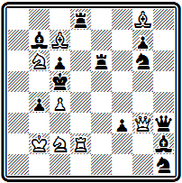
Мат в 5 ходов
Первый вариант осложнен шахами белому королю: 1. Фе1 Се5+ 2. Лd4 (вскрывая линию действия ферзя) 2... С:d4+ 3. Фс3! (закрывая третью горизонталь) 3... С:с3+ 4. Крb3! с неизбежным матом конем b6. Вторая серия жертв проходит по вертикали "d": 1... f2 2. Kd7+ (освобождая поле b6) 2... Л:d7 (2... Кр:с4 3. Лd4+ Kpb5 4. Ф:b4+) 3. Лd5+ (вскрывая диагональ для ферзя) 3... cd 4. Ф:b4+.
Задача была признана лучшим произведением конкурса "Эра" (1856 г.). За посылку в целом Кэмпбелл получил III приз.
Система присуждения отличий за посылки, содержащие 4-6, а то и больше произведений, была принята на всех больших международных конкурсах 50—70-х годов. Обнаружение дефекта хотя бы в одной задаче сводило на нет достоинства всех остальных. Жертвой этой системы едва не стал Хили в том же конкурсе "Эра". В одной из его задач обнаружилось опровержение авторского решения, посылке грозило исключение из конкурса, в котором она уже выдвигалась на призовое место. К счастью для Хили, один из судей нашел в задаче побочное решение, начинавшееся со взятия черной ладьи. Этим решением было заменено авторское и. . .репутация посылки восстановлена. Парадоксальный случай — побочное решение принесло отличие в конкурсе!
Для Кэмпбелла подобная история закончилась хуже. Во время международной выставки 1862 г. в Лондоне проводился второй международный турнир, к которому опять был приурочен конкурс составления задач. Конкурс собрал лучшие силы всего мира — только по разделу прямых матов поступило 54 посылки с 324 композициями. На этот раз, кроме обычных призов за посылки, присуждалось еще отличие за лучшую задачу. В первоначальном присуждении его была удостоена задача Кэмпбелла из посылки, за которую ему присудили II приз. Сразу после опубликования результатов в задаче было обнаружено побочное решение. Его пытались устранить добавлением белой пешки — не помогло, нашлось другое побочное решение. Тогда лучшей задачей была признана другая проблема из той же посылки Кэмпбелла. Но и в ней нашлось побочное решение. В окончательном присуждении посылка была дисквалифицирована. Эта неудача явилась большим ударом для Кэмпбелла, и в дальнейшем он почти совершенно оставил композицию.
Первая из упоминавшихся задач приведена на диаграмме №78 в исправленном виде.
№78
Д. Кэмпбелл Лондонский конкурс 1862
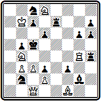
Мат в 5 ходов
В главном варианте после тихих ходов белого короля дважды проходит тема Новотного:
1. Фe1 Л:е1 2. Се2 Л:е2 3. Кра6 f2 4. Ле4; 2... f2+ 3. Кр:с7 Л:е2 4. Ле4 с матами конем на b7 или е6.
В первоначальной редакции отсутствовали пешки d2 и d3, белый ферзь стоял на b1 и задача допускала побочное решение -
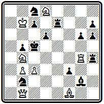
Мат в 5 ходов
1. Ке6+ Л:е6 2. Фd3 К:d3 3. К:d3+ Kpd5 4. c4+. Добавление белой пешки с2 устраняло возможность 2. Фd3, но не избавляло от 2. Фd1.
Приведем еще одну композицию Кэмпбелла, участвовавшую в Лондонском конкурсе 1862 г.— №79.
№79
Д. Кэмпбелл Лондонский конкурс 1862
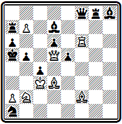
Мат в 5 ходов
Это одна из его труднейших и сложнейших задач с интересным центральным вариантом: 1. Cg6 (слон открывает вертикаль "d" для своего ферзя и одновременно перекрывает вертикаль "g" для черной ладьи; грозит 2. К:с4+ Кра4 3. Фd1+) 1... Cg4 (защищаясь от угрозы, черный слон сам перекрывает свою ладью и освобождает белого слона для дальнейшей атаки) 2. Се8 Фе7 (парируя угрозу 3. Сb6+ Кр:b6 4. Фс6+)
3. Ф:с4 Кс2 4. Фа4+ bа 5. Кс4#.
После 1862 г. Кэмпбелл опубликовал считанное число произведений. К числу лучших работ композитора принадлежит задача № 80.
№80
Д. Кэмпбелл "Иллюстрейтид лондон ньюс" 1868
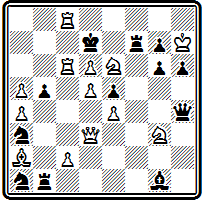
Мат в 4 хода
Замысел ее состоит в осуществлении перекрытия Новотного, осложненного критическим ходом одной из тематических черных фигур. Решение открывается неожиданным отскоком коня в угол 1. Kh1, создающим угрозу 2. Фh3. Защита 1... Лb3 позволяет осуществить труднонаходимую жертву ферзя для отвлечения ладьи за критическое поле: 2. Фf1 Л:f1. после чего следует комбинация Новотного 3. Кf2 с матами конем на с5 или f8. Сложнейшее построение, с использованием чуть ли не всех белых и
черных фигур, глубокая идея, осуществляемая эффектными ходами, удаляющими белые фигуры от поля боя, весьма затрудняют решение задачи.
В примере №81 интересна идея в игре белых фигур.
№81
Д. Кэмпбелл "Английские шахматные задачи" 1876
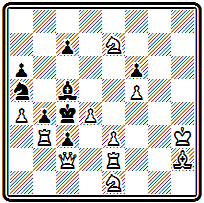
Мат в 4 хода
Вступлением 1. Cd6 перекрывается черный слон, чтобы сохранить коня е7 для создания угрозы 2. Kd3, и освобождается поле h2 для ладьи. В варианте 1... С:d6 она будет играть на это поле, осуществляя бристольскую идею освобождения линии для своего ферзя: 2. Лh2 (грозит 3. Фе2+; 2... С:h2 3. Kd3) 2...С:е7 3. Фg2 с матами 3... Кр:b3 4. Фа2# или 3... ~ 4. Фg8#.
Мы познакомились с творчеством крупнейших английских композиторов переходного периода. Для их творчества характерно отсутствие четко оформленного единого направления. Отдельные проблемисты работали в совершенно различных стилях. Это была пора исканий, завершенных лишь следующим поколением проблемистов, которое избрало основное направление и создало английскую школу в шахматной задаче.
Итоги развития композиции в Англии за первые три четверти века были подведены большим сборником "Английские шахматные задачи", выпущенным Д. и В. Пирс в 1876 г. (20). Из приведенных в книге 608 задач примерно по 40 процентов приходится на трехходовки и четырехходовки, только около 7 процентов — на двухходовки и остальное — на многоходовки.